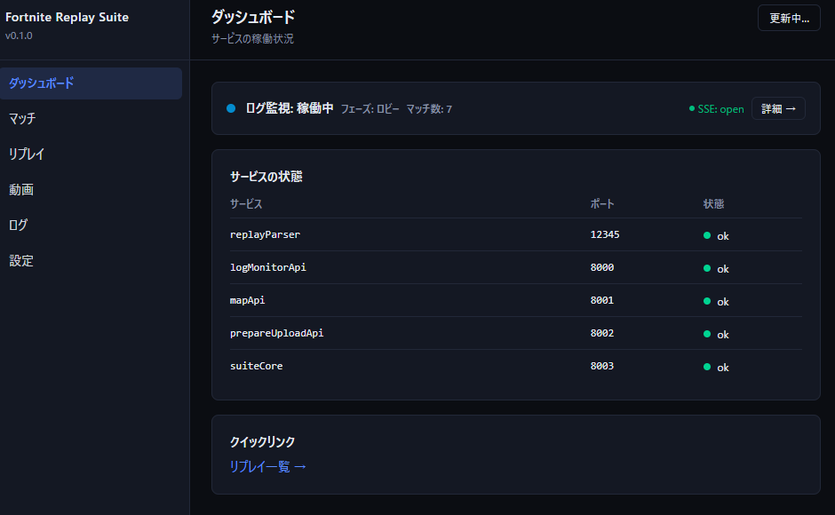
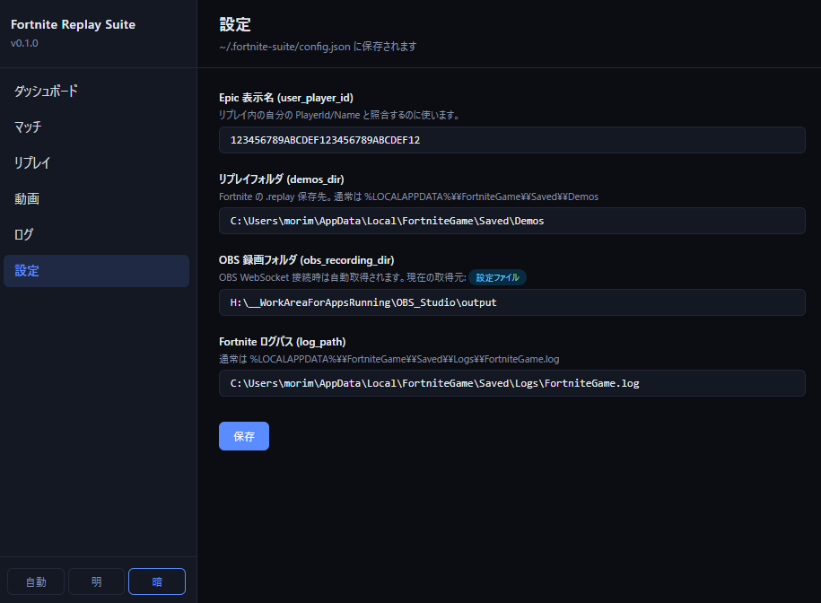
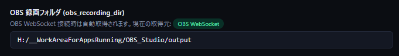
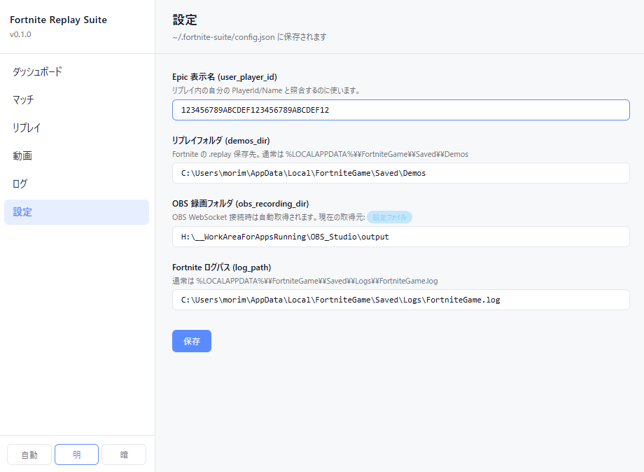

1ダッシュボード
ブラウザで http://localhost:5173（開発時）または Gateway 配信の URL を開くと、最初にダッシュボードが表示されます。各サービスの稼働状況がカードで一覧でき、すべてのカードが緑であれば全サービスが reachable な状態です。

左サイドバーには「ダッシュボード / マッチ / リプレイ / 動画 / ログ / 設定」の 6 リンクが並びます。本ガイドの 04〜06 章はそれぞれの機能ページの使い方です。
2設定ページ
サイドバーの「設定」または直接 /settings を開くと、各種設定項目を編集できます。値はすべて ~/.fortnite-suite/config.json に保存されます。

各フィールドの編集は「保存」ボタンを押した瞬間に config.json へ書き込まれます。差分のみが送信されるため、未編集のフィールドは書き換わりません。保存に成功すると「保存しました。」と表示されます。
3設定項目一覧
| キー (API) | UI ラベル | 用途 |
|---|---|---|
user_player_id |
Epic 表示名 | リプレイ内の自分の Player を識別。動画のキル/デス候補を「自分が絡む試合イベントだけ」に絞り込むのに使用 |
demos_dir |
リプレイフォルダ | Fortnite の .replay 保存先。通常 %LOCALAPPDATA%\FortniteGame\Saved\Demos |
obs_recording_dir |
OBS 録画フォルダ | OBS の録画保存先。OBS 起動中なら WebSocket 経由で自動取得 |
log_path |
Fortnite ログパス | ログ監視機能で tail するファイル。通常 %LOCALAPPDATA%\FortniteGame\Saved\Logs\FortniteGame.log |
replay_result_template |
マッチ結果テンプレート | リプレイ詳細の「コピー」ボタンで出力されるテキストの書式を Mustache 記法で定義。フィールド詳細は §4 参照 |
存在しないパスを保存しようとすると 422 エラーで弾かれ、「保存失敗:」と表示されます。タイプミスや、まだ Fortnite を一度も起動していない（Demos/ フォルダがまだ無い）場合に発生しがちです。
4マッチ結果テンプレート
リプレイ詳細ページ（/replays/:id）の「コピー」ボタンで出力されるテキストは、Mustache 記法で書かれたテンプレートを使ってブラウザ上でレンダリングされます。テンプレートはこの設定フィールドで自由に編集できます。
デフォルトのテンプレートは YouTube の動画説明欄への貼り付けを想定したプレーンテキスト形式です。{{フィールド名}} の部分に実際の値が埋め込まれます。
{{field}}— 値を埋め込む{{#eliminations}} … {{/eliminations}}— キル一覧のループ（eliminationsが空なら何も出力されない）{{#is_eliminated}} … {{/is_eliminated}}— 真のときだけ出力するセクション{{^is_eliminated}} … {{/is_eliminated}}— 偽のときだけ出力する逆セクション
利用できるフィールド一覧
| フィールド名 | 型 | 内容 |
|---|---|---|
| 試合情報 | ||
started_at |
文字列 | 試合開始日時（例: 2026/05/17 日曜日 16:58:04） |
ended_at |
文字列 | 試合終了日時 |
duration |
文字列 | 試合の長さ（例: 23:49） |
total_players |
整数 | 総プレイヤー数 |
human_players |
整数 | 人間プレイヤー数 |
bot_players |
整数 | Bot 数 |
| 自プレイヤー情報 | ||
player_name |
文字列 | Epic 表示名 |
cosmetics_name |
文字列 | 使用スキン名 |
human_or_bot |
文字列 | human または bot |
placement |
整数 | 順位（数値、例: 98） |
placement_display |
文字列 | 序数付き順位（例: 98th） |
elimination_count |
整数 | キル数 |
is_winner |
真偽値 | Victory Royale なら true。{{#is_winner}}…{{/is_winner}} 形式で使用 |
is_eliminated |
真偽値 | 敗北（デス）なら true。{{#is_eliminated}}…{{/is_eliminated}} 形式で使用 |
キル一覧ループ（{{#eliminations}} … {{/eliminations}} の中で使用） | ||
nth |
文字列 | 何キル目か（序数表記: 1st、2nd …） |
time |
文字列 | キル発生時刻（試合開始からの経過時間, 例: 05:23） |
player_name |
文字列 | キルした相手の表示名 |
cosmetics_name |
文字列 | 相手のスキン名 |
human_or_bot |
文字列 | 相手が human か bot か |
デス情報（is_eliminated が真のときのみ有効） | ||
eliminated_by_player_name |
文字列 | 倒したプレイヤーの表示名 |
eliminated_by_cosmetics_name |
文字列 | 倒したプレイヤーのスキン名 |
eliminated_by_human_or_bot |
文字列 | 倒したプレイヤーが human か bot か |
eliminated_by_time |
文字列 | デス発生時刻 |
| プラットフォーム情報 | ||
os |
文字列 | OS 名（例: Microsoft Windows 11 Pro） |
cpu |
文字列 | CPU 名 |
memory |
文字列 | 総 RAM 量（例: 63.93 GB RAM） |
available_memory |
文字列 | 使用可能 RAM 量 |
gpu |
文字列 | GPU 名 |
resolution |
文字列 | 解像度（例: 2560 x 1440） |
テンプレートをデフォルトに戻したい場合は、フィールドを空欄にして保存すると、次に設定を開いた際にデフォルトテンプレートが再読み込みされます。
5OBS 録画フォルダ取得元バッジ
「OBS 録画フォルダ」フィールドの hint 行には、その値が どこから来たか を示す小さなピル型バッジが表示されます。

| バッジ | 色 | 意味 |
|---|---|---|
| OBS WebSocket | 緑 | OBS 起動中、WebSocket 接続成功で録画フォルダを自動取得 |
| 設定ファイル | 青 | config.json の値を使用（OBS 停止中、または接続失敗時のフォールバック） |
| 既定値 | 灰 | OBS 停止中 + 設定ファイルにも値なし。フォールバック既定値を使用 |
取得元判定は suite_core サービス起動時に 1 回だけ 行われます。OBS を後から起動した場合は scripts/stop.ps1 + scripts/start.ps1 で suite_core を再起動してください。
6テーマ切替
サイドバー下部のスイッチで light / dark テーマを切り替えられます。設定はブラウザの localStorage に保存され、次回以降も維持されます。

ダークテーマ時、<select> のドロップダウンは黒背景 + 白文字になるよう CSS の color-scheme: dark + 明示的な背景色指定が効いています。リプレイ詳細でプレイヤーを選ぶドロップダウン等で確認できます。